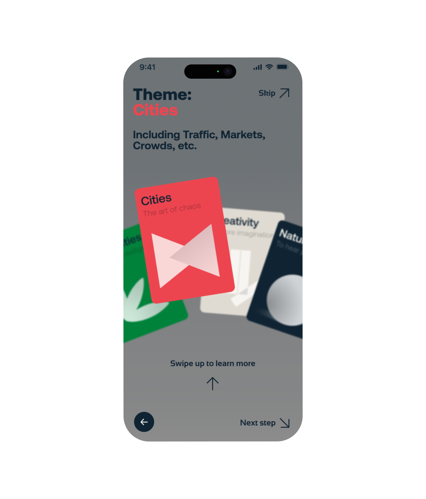
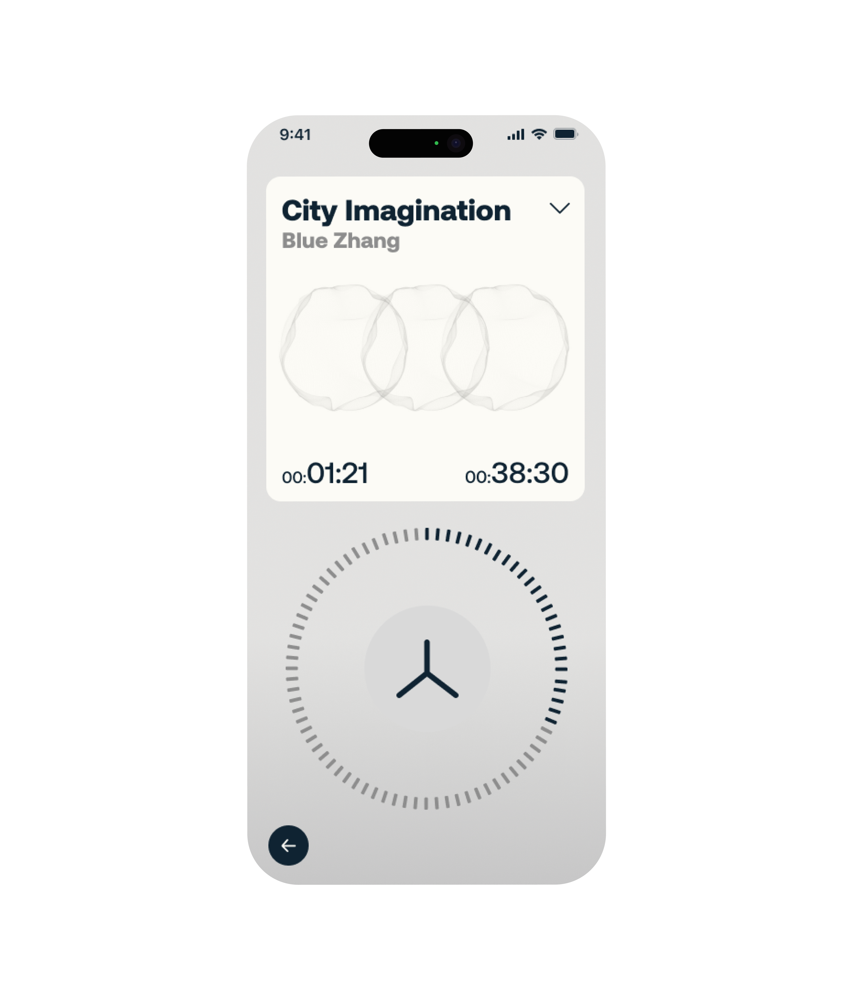

Interval.
社交媒体上的旅行内容几乎全靠视觉——精修照片、滤镜、构图。但到了现场，很多人发现眼前的景色和手机里看到的完全不一样。这个项目想探索的是：如果换一种感官入口，声音能不能帮人建立更真实的空间感知？
Interval 是一个以声音为核心媒介的旅行探索 app。用户可以发现、录制和分享城市中的声音叙事，用听觉代替视觉去重新认识一个地方。

视觉欺骗与声音的可能性
这个项目从一个观察出发：社交媒体上的旅行内容让人对目的地产生过高期待，到了现场后经常失望。我做了一轮问卷调查，结果显示多数用户认为社交媒体上的旅行图片"经常"与实际不符，对视觉内容的信任度普遍偏低。
接着我查阅了声学研究文献——Blesser 和 Salter 的研究指出，声音具有全方位性，能够超越视觉的局限，与情绪建立更直接的连接；Schafer 的 Soundscape 理论则认为，通过倾听环境，人们可以重新发现被忽视的文化和自然叙事。
实地调研与竞品分析
我在几个争议较大的社交媒体"网红景点"做了实地调研，采访到场游客对视觉欺骗和声音感知的看法。多数受访者表示：照片经常让他们感到"被骗"，但声音——市场里的叫卖、街巷里的脚步声、河边的水流——反而让他们觉得更接近真实。
竞品分析覆盖了 Spotify（以算法推荐见长但不做空间叙事）、喜马拉雅（内容丰富但偏单向输出）和携程（重预订轻体验）。Interval 要做的事情不在这三者的交集里——它不是播客平台，不是旅行社，而是一个让用户自己去发现和创造声音故事的工具。
从声音叙事到交互设计
设计过程分两条线推进。一条是声音叙事的方法论——从选题构思、实地录制、后期编辑到重构叙事线，我把声音创作拆成了六个可操作的步骤，并把这个流程直接融进 app 的交互结构里。另一条是交互层面的：用户流程、低保真线框、设计系统定义、再到高保真原型。

设计语言
Interval 的视觉系统围绕深色主调 + 珊瑚红强调色构建。深色背景强化沉浸感和"倾听"的氛围，珊瑚红用于交互元素和录制状态，让关键操作在暗色界面中一眼可见。字体选择了 Sansation（标题）和 Aeonik（正文），前者带有轻微的几何感，后者保持良好的小字号可读性。



最终设计与反思
最终原型涵盖了完整的用户流程：从声音发现页、创作者空间、录制引导、到声音编辑和社区发布。整个 app 不做任何视觉旅行推荐——它只负责声音层的体验，这是它和所有现有旅行产品最根本的区别。
这个项目对我后续的工作方向产生了直接影响。它让我开始关注"非视觉感官如何参与数字产品设计"这个问题——后来做 AI 音乐共创工具时，很多关于"用户如何理解声音反馈""如何在界面上组织听觉信息"的设计直觉，都来自 Interval 阶段的积累。
我做了什么
这是一个个人项目。从前期问卷调研、实地录音采集、文献综述，到用户画像、交互流程设计、设计系统定义、低保真线框和高保真原型制作——全部由我独立完成。声音叙事方法论也是我自己整理的，后来被融入了 app 的创作引导流程中。